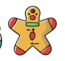
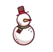

Carta navideña
19 de diciembre, 2025


Hola mi corazón de jengibre. Ya es diciembre! mes de cumpleaños y de navidad; espero sea un mes increíble para ti, me gustaría, antes de irme darte un gran regalo de navidad, pero pasaron cositas, entocnes, por el momento te escribo esta cartita y cuando regrese busco la forma de darte algo mucho mejor. Hablando de irme, yo sé que te causa produnda tristeza y a mi tambien me pone triste, es mucho tiempo el que estaré sin ti y tu sin mí, como dice la canción jsjsjs, aún así trataré de estar lo mas presente en tu vida que pueda, aparte yo siempre estoy en tu mente y en tú corazón obvio. Me la pasé increíble este mes y gracias a ti tuve un súper padre cumpleaños, me encanta que estés en mi vida y pasemos tiempo juntos, el tomar atolito y estar acurrucados porque hace muchísimo frío, en verdad me haces muy feliz, estoy agradecido inmensamente por todo lo que me ayudas y me amas y por tu mera exostencia, has cambiado mi vida por completo y en esta navidad lo único que quiero desear es a ti, una vida contigo, que pronto nuestras navidades sean juntos como familia, yo sé que estos años serás complicados, pero valdrán completamente la pena y serán minusculos comparados al tiempo, carilo y felicidad que nos falta aún por vivir. En esta y mil vidad, te amo De tu Novio Juan.